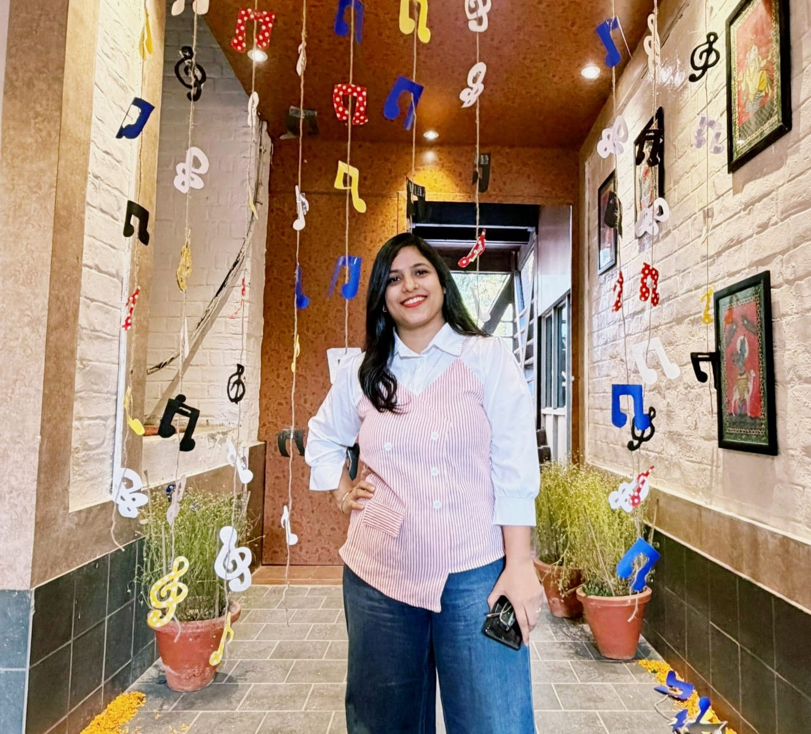

Assistant Professor 8th Jan 2023 – Till Date (Permanent)
Department of Computer Science, Ram Lal Anand College, University of Delhi

Ms. Manisha Wadhwa
Department of Computer Science
Ram Lal Anand College, University of Delhi
manishawadhwaarora@rla.du.ac.in
Department of Computer Science, Ram Lal Anand College
011-24112557
University of Delhi
2022 – Ongoing
Department of Computer Science, University of Delhi
2014
Indraprastha College for Women, University of Delhi
2012
System Programming
Software Engineering
Computer Networks
Database Management System
Unmanned Aerial Vehicles and Path Planning
Compiler Design
Department of Computer Science, Ram Lal Anand College, University of Delhi
Department of Computer Science, Ram Lal Anand College, University of Delhi
Department of Computer Science, University of Delhi
Taught Compiler Design
Shaheed Sukhdev College of Business Studies, University of Delhi
Taught Database Management System (DBMS)
Ramanujan College, University of Delhi
Taught Multimedia Systems and Applications
Nagarro Software Private Limited
Experience in software/application development using technologies such as ASP.NET MVC, Entity Framework, ADO.NET, WPF, SQL Management Studio, CSS, Query, HTML, PHP, Sikuli IDE, and MySQL. Also has experience in automation and manual testing.
Research Papers
International Patents: 1 (UK Patent) + 2 (National Patent)
National Patent Publications: Two
International Patent (UK): One